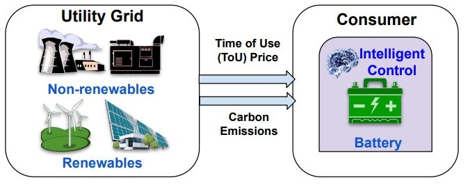

Scenario 1: Solving Battery Arbitrage Problem (Cost and Carbon Optimization)#
Our partner, a global energy provider is deploying Li-ion batteries at their consumer premises to either maximize economic profit (increase cost savings by charging/discharging the battery at off-peak/peak price periods) or maximize environmental impact (reduce overall carbon footprint by charging/discharging the battery based on usage of renewable/non-renewable energy sources from the utility grid).

Brief look into EnCortex implementation details#
The Entities used here are
BatteryandGrid, which is an umbrella term for a utility grid.The action space or the decision in this scenario is to either charge the battery, discharge the battery or letting it stay idle.
The supported optimizers are
Mixed-Integer Linear Programming,Reinforcement Learning,Simulated AnnealingThe data in this scenario is only present with the
Gridentity. Thecsvfile format is illustrated in the table below:
timestamps |
prices |
emissions |
|---|---|---|
2019-10-20 00:00:00 |
40.47 |
116.0 |
… |
… |
… |
For more details, please refer to Section 5.1 in our paper: EnCortex
Here, we aim to use the below objective function:
where \(\omega_{field}\) corresponds to relative weight/importance of that field/attribute. The field here are cost savings(\(Cost_t\)), carbon emission savings(\(Em_t\)) and degradation cost associated with the battery(\(DegCost_t\)). The \(T\) corresponds to the horizon over which the objective function is maximized.
Step 1 : Import the libraries:#
Here, first we import all the general as well as encortex based abstractions necessary to solve the problem statement.
[ ]:
# Import external libraries and some modules
import numpy as np
from rsome import ro
from rsome.lp import Affine
import os
import pandas as pd
import pytorch_lightning as pl
from encortex.contract import Contract
from encortex.decision_unit import DecisionUnit
from encortex.environments.battery_arbitrage import BatteryArbitrageMILPEnv
from encortex.environments.battery_arbitrage import BatteryArbitrageRLEnv
from encortex.grid import Grid
from encortex.sources import Battery
from encortex.optimizers.milp import MILPOptimizer
from encortex.optimizers.rl import EnCortexRLOptimizer
from encortex.data import MarketData
from encortex.backend import DFBackend
from encortex.callbacks.env_callback import EnvCallback
from wandb.integration.sb3 import WandbCallback
from stable_baselines3.common.logger import HumanOutputFormat, KVWriter, Logger
from encortex.utils.mlflow_utils import MLflowOutputFormat
from IPython.core.interactiveshell import InteractiveShell
from IPython.display import display, Markdown, clear_output
import ipywidgets as widgets
from itertools import repeat
InteractiveShell.ast_node_interactivity="all"
Step 2: Inputs from the User#
Next, we present certain configurable parameters, that the user can tweak and experiment to improve the performance for the scenario
Optimization Algorithms : We support multiple algorithms such as ,
Mixed Integer Linear Programming (MILP) :There are various solvers which can be used for MILP. We support : OR-Tools (“ort”), Gurobi (“grb”), Cplex (“cpx”), CyLP (“clp”), ECOS (“eco”), MOSEK (“msk”) and so on. We recommend using OR-Tools as a free open source solver producing similar reproducible correct solution. Gurobi is the other recommended solver which although commercial, takes lesser solving time to produce similar result.
Simulated Annealing (SA) : Simulated Annealing does not require any solver.
Deep Reinforcement Learning (DRL) : The following cell shows how to run Reinforcement Learning. Deep Q-Networks (dqn) is used for the problem statement given here. We support multiple other reinforcement learning algorithms like : Advantage Actor Critic (a2c), Proximal Policy Optimization (PPO) and so on. Therefore the respective solver names to be used are : “dqn”, “a2c”, “PPO”. Check for all the optimizers that can be used from here.
The user can use the following flags to specify the type of algorithm to be used and mention the solver name to run the optimization.
[ ]:
#specify the type of optimization to be used:
milp_flag = False
solver = "grb" #the algorithm to be used
# In order to use RL:
# milp_flag = True
# solver = "grb" #the algorithm to be used
Selection of Objectives: An user can choose to optimize for any combination of the following objectives by providing the relative importance weights as a float value between 0.0 to 1.0:
Carbon Optimization
Cost Optimization
For example, in the following cell, equal importance has been given to emission and price values, thus the algorithms will optimize for both the objectives leading to optimal schedules that the energy operator can take by which both increasing profits and reducing carbon footprints can be taken care of.
Because of the high variability in the data, it is not always intuitive to provide equal importance to both emissions and prices so as to lead to optimal savings. For this, we use Pareto Optimization curves to come to a single point of optimality, as discussed in our Paper.
Since batteries perform a limited number of cycles during their lifetime, we consider an accurate battery degradation model to model the battery’s lifetime. Hence, the Degradation importance weightage is also provided in addition to the above.
[ ]:
#provide optimization weights for the objectives
omega = 0.5
# # Cost Optimization
# omega = 0.0
# # Carbon Optimization
# omega = 1.0
Battery Configurations: An user can run several experiments by tweaking the battery configurations. Following are the battery configurations which are left to user for configurable inputs:
storage_capacity : the battery capacity (in kWh)
efficiency : here, charging and discharging efficiency (in %) taken the same/ if different take it differently
depth_of_discharge : the maximum discharge (in %) percentage that can happen at a time, here 90%
soc_minimum : the minimum state of charge of the battery, below which the battery should not be explored
timestep : battery decision time steps
degradation_flag : whether to have degradation model in place or not for the batteries
min_battery_capacity_factor : the battery capacity reduction percentage due to degradation, below which if capacity reduces due to overuse, battery does not stay at good optimal health
battery_cost_per_kWh : the battery replacement cost (in $/kWh)
reduction_coefficient : after every charge-discharge cycles over a certain period, the battery capacity reduced by the reduction coefficienct
degradation_period_in_days : the period after which battery degrades
action : battery actions, Here the battery can take 3 different actions {Charge/Discharge/Stay idle} at different power rates.
soc_initial : initial state of charge of the battery to run the test experiments
test_flag : the flag initiates random initial state of charge of the battery during training runs/experiments to avoid overfitting
schedule: Schedule at which these actions must be executed at
[ ]:
'''
run experiments for the following battery configurations
elements in the list denote different batteries/battery configurations to be used in the scenario together (here just 1 element indicating 1 battery being used)
'''
timestep=(60, "m")
storage_capacity=10
charging_efficiency=1.
discharging_efficiency=1.
soc_initial=0.2
depth_of_discharge=90
soc_minimum=0.1
degradation_flag=False
min_battery_capacity_factor=0.8
battery_cost_per_kWh=200.
reduction_coefficient=0.0
degradation_period=10
test_flag=True
schedule="0 * * * *"
seed = 42
Step 3: Instantiating Objects of the required abstractions from the framework:#
Here, the energy operator determines the entities involved in the scenario and uses the framework provided abstractions for the same. Following are the two entities used here:
Battery Entity : We inherit the storage class to define a Li-ion battery entity. In this scenario, we define three battery actions: charge at max rate, discharge at max rate or stay idle. The energy operator populates the parameter values based on their battery configuration and instantiate an EnCortex-Battery object.
[ ]:
'''
run experiments for the following battery configurations
elements in the list denote different batteries/battery configurations to be used in the scenario together (here just 1 element indicating 1 battery being used)
'''
battery = Battery(
timestep=timestep,
name="Battery",
id=id,
description="Battery",
storage_capacity=storage_capacity,
charging_efficiency=charging_efficiency,
discharging_efficiency=discharging_efficiency,
soc_initial=soc_initial,
depth_of_discharge=depth_of_discharge,
soc_minimum=soc_minimum,
degradation_flag=degradation_flag,
min_battery_capacity_factor=min_battery_capacity_factor,
battery_cost_per_kWh=battery_cost_per_kWh,
reduction_coefficient=reduction_coefficient,
degradation_period=degradation_period,
test_flag=test_flag,
schedule=schedule,
)
Utility Grid: Since Energy Arbitrage does not require any bidding decisions in the market, we modify the real-time market entity to a simplified real-time market entity that captures just the real-time market prices along with the carbon footprint information. This shows the utility of our abstractions, which allow seamless modification/extension of the definitions based on the scenario. Check into the encortex references to know more about the argument details.
Now, this entity requires loading data of the market prices and the carbon emissions. There are two ways of using the data:
Download data from any public source (here, we share an onedrive link to show the functionality of the same), create a folder named data and add your train.csv and test.csv files for both forecast and actual data.
Using Data Loaders of Encortex: We have some publicly available data support in the framework.(The commented section shows the use of Data Loaders here). Also, one needs to replace all the forecast_df and actual_df with forecast_df.data and actual_df.data here. The existing data loaders takes in 3 user-specific arguments:
train: A flag saying whether training/test data to load
forecasts: A flag saying whether experiments are to be run on forecasts/actuals
forecast_type: A string specifyng the type of forecast:
noise : Adding noise to the actual values and treating that as forecasts
smoothing : Smoothing the actual values and using that as forecasts
yesterdays : assuming yesterday’s actual data as forecasts for today’s data
meanprev : assuming mean of previous n days as forecasts for today’s data (default)
lgbm : using light gradient boosting machine to produce forecasts
nbeats: using nbeats model to produce forecasts
auto : if forecasts already available load that instead
Since schedules are made ahead of time, accurate forecasts are required for producing optimal decisions. We recommend using nbeats as a forecast type for this purpose.
[ ]:
forecast_df = pd.read_csv("/home/akshayn/main_encortex//data/UK_data_2020_meanprev_shortened.csv")
actual_df = pd.read_csv("/home/akshayn/main_encortex//data/UK_data_2020_actuals_shortened.csv")
forecast_df[['emissions', 'prices']] = forecast_df[['emissions', 'prices']].apply(lambda x: np.float32(x))
actual_df[['emissions', 'prices']] = actual_df[['emissions', 'prices']].apply(lambda x: np.float32(x))
grid_data = MarketData.parse_backend(
3, True, 3, 3, np.timedelta64(5, 'm'), price_forecast=DFBackend(forecast_df['prices'], forecast_df['timestamps']),
price_actual=DFBackend(actual_df['prices'], actual_df['timestamps']),
carbon_emissions_forecast=DFBackend(forecast_df['emissions'], forecast_df['timestamps']),
carbon_emissions_actual=DFBackend(actual_df['emissions'], actual_df['timestamps']),
carbon_prices_forecast=DFBackend(forecast_df['prices'], forecast_df['timestamps']),
carbon_prices_actual=DFBackend(actual_df['prices'], actual_df['timestamps']),
volume_forecast=DFBackend(None, None),
volume_actual=DFBackend(None, None),
)
grid = Grid(
timestep=(60, "m"),
name="Grid",
id=3,
description="Grid",
bid_start_time_schedule="0 * * * *",
bid_window=np.timedelta64(0, "h"),
commit_start_schedule=(0, "h"),
commit_end_schedule=(0, "h"),
schedule="0 * * * *",
data=grid_data
)
Step 4: Creating Decision units for the problem statement:#
Decision units are built based on the entities and contracts associated with a particular producer. Contracts define the flow of energy between 2 entities in the framework. We use a graph representation of entities as nodes and contracts as edges to identify decision units. A decision unit generates critical information on the schedule and the associated actions based on the included contracts/entities.
Here, for this scenario, contracts are between the grid and the batteries installed near to the consumer, and the decision unit is built on top of it(see line 5 in the cell below). The contract is bidirection since power can flow both ways between a battery and a grid
[ ]:
contract = Contract(
contractor = battery,
contractee = grid,
bidirectional = True
)
du = DecisionUnit(contracts = [contract])
Step 5: Function to Store Results in a dataframe and then later to csv format:#
Dump results into dataframes for later visualizations - - battery_soc_list: stores the current list of state of charge values for MILP - action_list : list of actions: charging/discharging/idle taken by the optimizer for a step - power_list: power associated with the action taken by the optimization algorithm - carbon_intensity_list: Actual carbon emission intensity values in gCO2eq/kWh - price_intensity_list: Actual price values in $ - reward_list: List of rewards received for taking actions in particular states - carbon_savings_forecast_list : Carbon savings done due to the action taken for a particular state at a certain timestamp - price_savings_forecast_list : Price savings due to the action taken for a particular state at a certain timestamp
[ ]:
def create_dataframe(
battery_soc_list,
action_list,
power_list,
carbon_intensity_list,
price_intensity_list,
carbon_savings_list,
price_savings_list,
reward_list,
carbon_savings_forecast_list,
price_savings_forecast_list
):
df=pd.DataFrame()
df.insert(loc=0, column='Current_SOC', value=battery_soc_list)
df.insert(loc=1, column='Predicted_Action', value=action_list)
df.insert(loc=2, column='Predicted_Power_Action', value=power_list)
df.insert(loc=3, column='Carbon_emissions', value=carbon_intensity_list)
df.insert(loc=4, column='Carbon_savings', value=carbon_savings_list)
df.insert(loc=5, column='Forecast_Carbon_savings', value=carbon_savings_forecast_list)
df.insert(loc=6, column='Price_emissions', value=price_intensity_list)
df.insert(loc=7, column='Price_savings', value=price_savings_list)
df.insert(loc=8, column='Forecast_Price_savings', value=price_savings_forecast_list)
df.insert(loc=9, column='Reward', value=reward_list)
return df
#store the results into results folder
country = "UK" # change it to the respective country name based on the grid's price/emissions data
dir = os.getcwd()
dir_path = os.path.join(dir, f'results_{country}/')
if not os.path.isdir(dir_path):
os.mkdir(dir_path)
[ ]:
dir = os.getcwd()
print(dir)
Step 6: Instantiate the environment object from the scenario specific environment class#
Environment forms a key layer in the EnCortex architecture to provide data and state information (state space) from entities that are needed to make a decision (action space) and a central point to orchestrate all the required decisions based on the schedule.
EnCortex supports some of the common scenario based environments which can be easily extended to other similar custom scenarios by the energy operators. BatteryArbitrageScenarioEnv is one of the supported environments by EnCortex. Check here to know more details. The step_time_difference is another user-configurable parameter which says about the optimization step to be taken. For MILP, the optimum result comes when the step time difference is set similar to the timestep parameter. For Reinforcement Learning, it is a mandate to set it equal to the timestep else the action size increases which leads to erroneous learning by the agents.
[ ]:
'''
Instantiate an environment object from the scenario specific environment class
'''
if milp_flag:
env = BatteryArbitrageMILPEnv(
decision_unit= du,
start_time = np.datetime64("2020-01-01T00:00"),
seed = seed,
callbacks=[],
omega= omega,
)
else:
env = BatteryArbitrageRLEnv(
decision_unit = du,
start_time = np.datetime64("2020-01-01T00:00"),
seed = seed,
callbacks=[],
action_window=np.timedelta64(1, 'h'),
future_window=np.timedelta64(24, 'h')
)
Step 7: Training Pipeline for the algorithms:#
Training is only for RL and testing code can be split into 3 sections of RL, MILP, SA.
First of all, set the seed. This helps reproucing the results in the same machine, but still across different machine it does not guarantee to produce same result. The extreme noisy learning pattern, large amount of hyperparameter tuning, unpredictability and unexplainability of the RL agents add to the demerits of the algorithm.
[ ]:
#setting a seed for reproducibility of experiment results:
pl.seed_everything(seed)
Training in RL begins here, where we instantiate the DRLBattOpt based optimizer object and then save the best trained model to automatically created model_checkpoints folder for later usage.
[ ]:
'''
Training Pipeline for RL:
The code in this cell helps to train a RL model, but there could be issues in trying it out in the jupyter cell.
Hence we also provide a separate training script namely training_RL.py, try that out if the jupyter cell does not work.
During testing just the load the model saved from the training script
'''
if not (milp_flag):
opt = EnCortexRLOptimizer(
env = env,
name = "dqn",
policy = "MlpPolicy",
seed = seed,
enable_checkpoint=False,
target_update_interval=1,
verbose=2,
batch_size=8)
print("...... Starting Training .......")
if not os.path.exists(f"model_checkpoints/best_model.zip"):
opt.train(10, log_interval=1)
opt.save('model_checkpoints', 'best_model.zip')
print("------Training Completed--------")
Mixed integer linear programming (MILP) and Simulated Annealing does not require training, hence the code for the MILP and SA section is shown directly while testing
Step 8: Testing Pipeline for the algorithms :#
Load Test Data and Reinitialization:#
Now, we need to reinitiailize the grid object with the test dataset and change the respective decision unit contracts from the environment, so as to make the environment test ready!
[ ]:
#read test data having emissions & prices values of dataset
#load forecast and actual data for testing/inference
forecast_df = pd.read_csv("/home/akshayn/main_encortex/data/UK_data_2020_meanprev_shortened.csv")
actual_df = pd.read_csv("/home/akshayn/main_encortex/data/UK_data_2020_actuals_shortened.csv")
# forecast_df = UKPricesEmissionsData(train=False, forecasts=True)
# actual_df = UKPricesEmissionsData(train=False, forecasts=False)
forecast_df[['emissions', 'prices']] = forecast_df[['emissions', 'prices']].apply(lambda x: np.float32(x))
actual_df[['emissions', 'prices']] = actual_df[['emissions', 'prices']].apply(lambda x: np.float32(x))
#parse the test data to the MarketData backend
grid_data = MarketData.parse_backend(
3,
True,
3,
3,
np.timedelta64("5", "m"),
price_forecast=DFBackend(forecast_df['prices'], forecast_df['timestamps']),
price_actual=DFBackend(actual_df['prices'], actual_df['timestamps']),
carbon_emissions_forecast=DFBackend(forecast_df['emissions'], forecast_df['timestamps']),
carbon_emissions_actual=DFBackend(actual_df['emissions'], actual_df['timestamps']),
carbon_prices_forecast=DFBackend(forecast_df['prices'], forecast_df['timestamps']),
carbon_prices_actual=DFBackend(actual_df['prices'], actual_df['timestamps']),
volume_forecast=DFBackend(None, None),
volume_actual=DFBackend(None, None),
)
grid.data = grid_data
The following code snippet generates results on the training dataset using MILP optimizer.
[ ]:
# generate test results for MILP
# Code for MILP to generate results on the training dataset:
if milp_flag:
done = False
time = np.datetime64("2020-01-01T00:00")
opt = MILPOptimizer(env)
# Run the optimizer on the environment
while not done:
obj, reward, time, done = opt.run(time)
battery_log = battery.action.action_log
environment_log = env.get_log()
current_socs =[]
predicted_actions = []
predicted_actions_power = []
for k,v in battery_log.items():
try:
v['current_soc'] = v['current_soc'][0]
except:
pass
current_socs.append(v['current_soc'])
predicted_actions.append(v['action'][0])
predicted_actions_power.append(v['power'][0])
results = create_dataframe(current_socs, predicted_actions, predicted_actions_power, environment_log['Carbon Emission'], environment_log['Price'], environment_log['Reward Carbon'], environment_log['Reward Cost'], environment_log['Reward'], environment_log['Reward Carbon'], environment_log['Reward'])
results.to_csv(dir_path+"testdf_MILP.csv", index=False)
#@TODO MR: Saving stuff, not sure how to handle
Next, we load the saved trained DRL model to generate inference results on the same training dataset.
[ ]:
# generate results for RL test data
if not (milp_flag):
#load the model first, if trained from the python script training_RL.py
opt.load('model_checkpoints/', 'best_model')
done = False
time = np.datetime64("2020-01-01T00:00")
env.start_time = time
env.reset()
# Run the optimizer on the environment
while not done:
obj, reward, time, done = opt.run(time)
Step 9: Result Visualization:#
Instantiate the visualization object from the environment by passing 2 arguments: - results_folder : The local folder name, where all the final results are stored - optimizers : A list of optimizers for which results are present in the results_folder
[ ]:
environment_log.keys()
[ ]:
vi = env.visualize('/home/akshayn/main_encortex/docs/notebooks/results_UK/', ['MILP'])
Then, after running the following cell, provide the following as input to visualize the plots: - A multiselect option to choose between optimizers, so as to compare the final savings between two or more of them. To multiselect pressShift+ leftClick. - Choose between training/test file options from the radio buttons provided to visualize the schedules generated for each of the optimizers running on the user-input option of train/test file. - From the slider, select a day for which the battery schedules are to be shown - Click on the Plot button to plot the results
[ ]:
menu = widgets.SelectMultiple(
options=['MILP', 'DRL', 'SA'],
value=['MILP'],
description='Optimizer:',
disabled = False)
rdbutton = widgets.RadioButtons(
options=['Training File', 'Test File'],
value='Test File',
layout={'width': 'max-content'},
description='File:',
disabled=False
)
env.horizon = np.timedelta64(1, 'h')
slider = widgets.IntSlider(
value=0,
min=0,
max=int(vi.tr_files[list(menu.value)[0]].shape[0]/(env.horizon/env.timestep)),
step=1,
description = "Day:")
button = widgets.Button(description='Plot')
out = widgets.Output()
def on_button_clicked(b):
with out:
clear_output()
vi.initial_plots(menu.value)
if rdbutton.value =="Test File":
if slider.value > int(vi.te_files[list(menu.value)[0]].shape[0]/(env.get_schedule_timestep()/env.timestep)) :
print("Please choose a day lesser than Day 365, since its end of the test dataset")
return
train_data = list(vi.tr_files.values())
test_data = list(vi.te_files.values())
approach = list(menu.value)
if len(approach) == 1:
if approach[0] =="MILP":
train_data=train_data[::2]
test_data=test_data[::2]
elif approach[0] == "DRL":
train_data=train_data[1::2]
test_data=test_data[1::2]
else:
pass
if rdbutton.value == 'Training File':
title = f'Results for the Day {slider.value} of UK Data'
vi.plot_results(train_data, slider.value, int(env.get_schedule_timestep()/env.timestep), title, approach)
else:
title = f'Results for the Day {slider.value} of UK Data'
vi.plot_results(test_data, slider.value, int(env.get_schedule_timestep()/env.timestep), title, approach)
button.on_click(on_button_clicked)
info = display(Markdown("""# Savings over the whole dataset
- No. of days in the train dataset : {}
- No. of days in the test dataset : {}
\n
\n
Choose an Optimizer:""".format(int(vi.tr_files[list(menu.value)[0]].shape[0]/(env.get_schedule_timestep()/env.timestep)),int(vi.te_files[list(menu.value)[0]].shape[0]/(env.get_schedule_timestep()/env.timestep)))))
display(menu)
display(Markdown('''\n \nChoose the file to view results:'''))
display(rdbutton)
display(Markdown('''\n \nChoose a day for checking schedules:'''))
display(slider, button, out)
The initial bar charts provide a “Total Savings” comparison between train and test files along with multiple optimizers if selected. The left hand side bar plots denote the overall cost savings, whereas the right side plots signify the carbon savings.
The plot below gives a clear indication of how the state of charge of the battery (green coloured line charts for multiple optimizers if selected) varies with the respective variations in Price (yellow plot) and carbon emissions (red plot). Based on the objective selected by the user, the price and carbon variations play a key role in deciding the charging and discharging schedules. For example, a common inference drawn from the schedules plot is when the prices are high, the battery discharges, whereas when the prices are low, the battery tends to charge from the utility grid, thus maximizing the profit for the consumer. Similar conclusion can be drawn for carbon arbitrage as well.
[ ]: